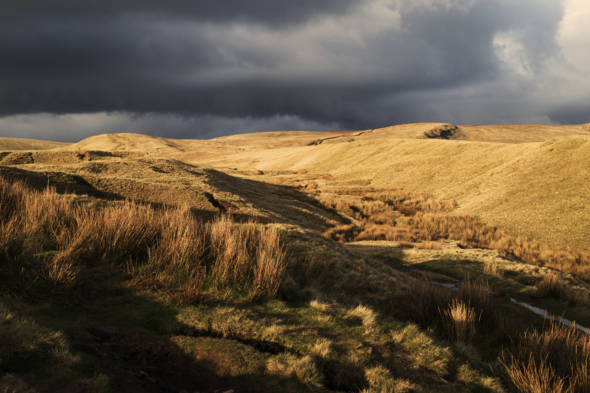
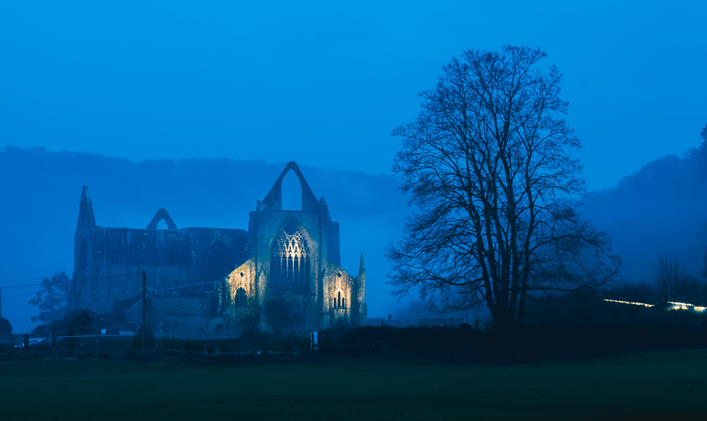
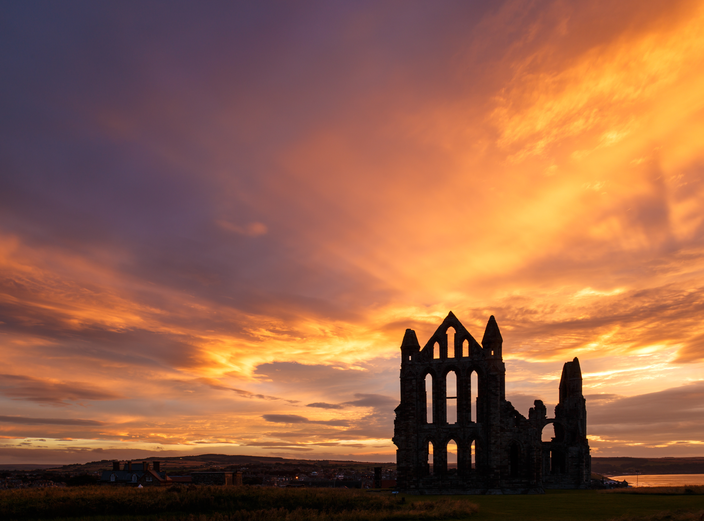
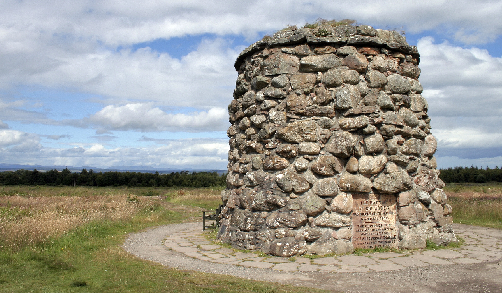
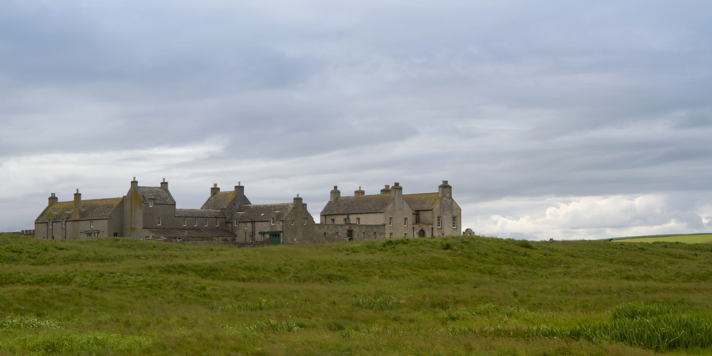
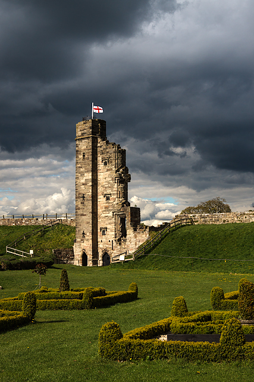

13 of Great Britain's most spookiest places to visit this Halloween
1. Pendle Hill
The Pendle witch trials of 1612 are one of the most famous trials in English history, where 12 people from around Pendle Hill were charged with murder using witchcraft, resulting in 10 executions. In 2011 a 17th century cottage was discovered by water engineers during construction work and is believed to have belonged to one of the Pendle witches. Pendle Hill remains full of mystery and is truly bewitching to visit.
2. Tintern Abbey
Situated on the banks of the River Wye, Tintern Abbey was founded in the 12th century but fell into ruin after the Dissolution of the Monasteries in the 16th century. There are reports of a knight in chain mail and ghostly hooded monk processions carrying torches, seen through the hollow windows and doorways of the mysterious abbey.
3. Chillingham Castle
A large variety of ghosts have been spotted by visitors to Chillingham Castle over the years. A blue boy used to apparently haunt the Pink Room in the castle with guests seeing blue flashes and a halo above their beds after a loud wail. The skeleton of a boy wearing blue clothes was then discovered during renovation works. Other ghosts reportedly include an injured soldier who lives in the Castle’s torture chamber, and a Spanish witch whose curse brings bad luck to those who steal from the castle.

4. Whitby Abbey
Originally a Christian monastery in the 7th century that later became an Abbey, after the Dissolution of the Monasteries in 1540 by Henry VIII the abbey fell into ruin. The Gothic setting of the abbey ruin overlooking the North Sea inspired Bram Stoker’s 1897 novel Dracula which featured the creature coming ashore as a large dog and climbing the 199 steps up to the ruins. You can still reach the abbey by climbing those steps today.
5. Tower of London
Often said to be the most haunted building in Britain, the Tower of London has a history of being a place of imprisonment and torture. Ghosts of the Princes in the Tower, allegedly murdered by their uncle Richard III, are said to roam the tower. Other ghosts include Lady Jane Grey, the White Lady and Anne Boleyn, who was buried in the Tower, and has been said to walk around carrying her head under her arm.

6. Culloden Moor
Culloden Moor was the site of the last battle on British soil, on 16th April 1746, resulting in a slaughter of the Jacobite rebellion who supported the return of the Stuarts to the throne. The government troops won and Jacobite prisoners and wounded were executed. On the anniversary of the battle, ghosts of fallen soldiers rise up, and steel weapons and cries of the wounded are said to be heard.
7. Margam Castle
Margam Castle is an impressive large Victorian country house built in a gothic style and has many paranormal stories. The most seen ghost is thought to be of Robert Scott, who worked at the Castle as a gamekeeper until he was murdered by a poacher and is said to be full of rage over his unjust killing. Other ghosts heard or seen by visitors and staff include giggling children in Victorian dress and a blacksmith.

8. Colchester Castle
The castle used to be a county prison, where during the English Civil War in 1645 the Witchfinder General Matthew Hopkins interrogated and imprisoned suspected witches. In total across East Anglia, he is believed to have been responsible for the executions of 300 alleged witches from 1644-1646.

9. Museum of Witchcraft
The Museum of Witchcraft and Magic in Boscastle was founded in 1960 by the English folk magician Cecil Williamson, and is now one of the most visited museums in Cornwall. The collection has grown to over 3000 objects and 7000 books and is a great opportunity to discover the history of witchcraft and magic in Britain.

10. Skaill House
Built in 1620, and a short distance from the stone-age village of Skara Brae, Skaill House is apparently home to many restless spirits, including the ghost of Ubby. Ubby was a man who built a small island in the middle of Skaill Loch by repeatedly rowing out and dumping stones, which eventually formed a small islet above the water. He is said to have died on the island and his spirit has adopted Skaill House.
11. Burley
Burley has a long connection with witches and the supernatural. During the 1950s, a self-styled white witch called Sybil Leek lived in Burley, and could be seen walking around the village with her pet jackdaw on her shoulder. Witch-related gifts can be found in Burley’s gift shops.

12. Dunsinane Hill
In 1054 the Earl of Northumbria defeated Macbeth of Scotland in a battle. The Hill is mentioned in Shakespeare’s play Macbeth when Macbeth is told by a supernatural being “Macbeth shall never vanquished be, until Great Birnam wood to high Dunsinane Hill Shall come against him.”

13. Tutbury Castle
Tutbury Castle is a mostly ruined medieval castle within which Mary Queen of Scots was held as a prisoner 4 times, and her ghost is said to roam the castle. Many other ghostly sightings have occurred including ‘The Keeper’ who was a man in a suit of armour who shouts at castle guests.

Contains Ordnance Survey data © Crown copyright and database rights 2019